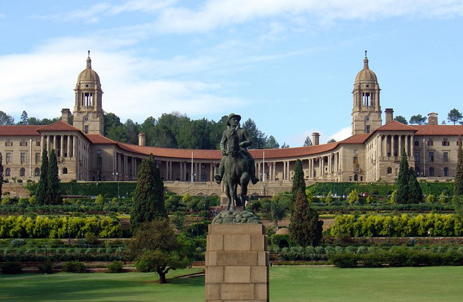

Victor Lesufi
Getting to know Victor more

Bangkok City
Bangkok has attracted millions of visitors annually for decades, offering tourists an incredible experience of cultural tradition-meets-modernity. It's got world-class food, stunning historical landmarks, and some of the best hospitality around the globe
Foreign Language
Being able to speak Spanish greatly enhances your resume. If you are bilingual you are more competitive in the workplace.
| English | Foreign Language |
|---|---|
| Hy there | Hola |
| Eat | comer |
| bootcamp | campo de entrenamiento |
Hist. Places
Transvaal mesium
The Ditsong National Museum of Natural History,
formerly the Transvaal Museum, is a natural history museum situated in Pretoria, South Africa. It is located on Paul Kruger Street, between Visagie and Minnaar Streets, opposite the Pretoria City Hall. The museum was established in 1895 by the former South African Republic
Union building
The Union Buildings were built from light sandstone and were designed by the architect Sir Herbert Baker in the English monumental style. The Buildings are over 275 m long and boast a semi-circular shape, with the two wings at the sides. This serves to represent the union of a formerly divided people.
kimberly hole
The Big Hole in Kimberley is considered for one of the deepest cavities excavated by man with a depth of 200 m2. Next to the Big Hole is the Kimberley Mine Museum, the first ever discovery of diamond reserves in the country.